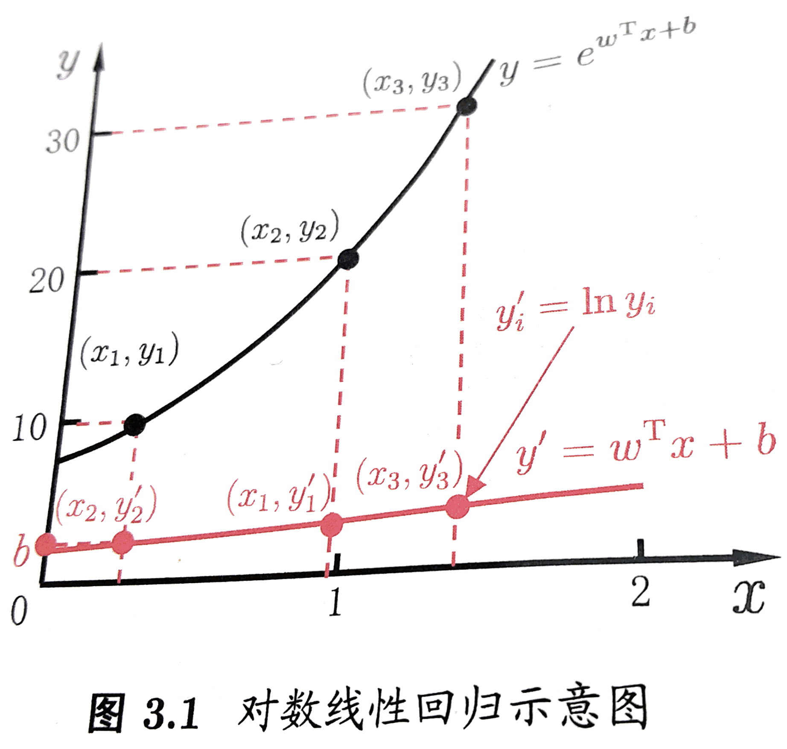
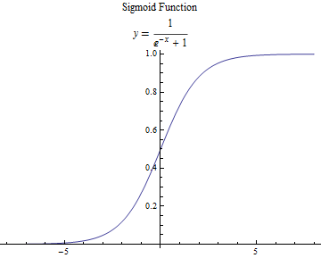

Logistic Regression 对数几率回归
接下来介绍下广义线性回归，也很简单，我们不再只用线性函数来模拟数据，而是在外层添加了一个单调可微函数$g(z)$，即$f(x_i) = g(wx_i+b) $ ，如果 $ g=ln(x) $，则这个广义线性回归就变成了对数线性回归，其本质就是给原来线性变换加上了一个非线性变换，使得模拟的函数有非线性的属性。但本质上的参数还是线性的，主体是内部线性的调参。

如果我们觉得模型应该是指数变化的时候，我们可以简单粗暴的把线性模型映射到指数变化上，如上图中的红线映射到黑色的指数线，这就是广义线性模型的思想
对数几率回归（Logistic Regression）不是解决回归问题的，而是解决分类问题的。目的是要构造出一个分类器（Classifier）。对数几率回归（Logistic Regression）的关键并不在于回归，而在于对数几率函数。
对一个简单的二分类问题，实际上是样本点或者预测点到一个值域为 的函数，函数值表示这个点分在正类（postive）或者反类（negtive）的概率，如果非常可能是正类（postive），那么其概率值就逼近与1，如果非常可能是反类（negtive）其概率值就逼近与0。
构造一个sigmoid函数 $y=\frac{1}{1+ \mathrm{e}^{-z} } $。
|
|

在对数几率回归（Logistic Regression），假设函数为$h_\theta (x) = g (\theta^T x)$，其中$g(z)=\frac{1}{1+ \mathrm{e}^{-z} } $就是我们上面构造的sigmoid函数。即，
$$
h_\theta (x) = \frac {1}{1 + \mathrm{e}^{-\theta^T x}}
$$
我们可以将对率函数的输出理解为，当输入为$x$的时候，$y=1$的概率，可以用$h_\theta(x) = P(y = 1 | x;\theta)$ 表达。对于sigmoid函数，当$z > 0$时 ，$g(z) \geq 0.5$ 即预测 $y = 1$，当$z < 0$时，$g(z) < 0.5$ 即预测$ y = 0$。
Logistic Regression cost function
跟线性回归中的代价函数相比，
$$
J(\theta) = \frac{1}{2m} \sum_{i=0}^{m} {(h_\theta(x^{(i)}) - y^{(i)})}^2
$$
线性回归之所以可以使用梯度下降法来下降到最优解是因为代价函数$J(\theta)$是一个凸函数。对于对率回归而言，假设函数$h_\theta (x) = \frac {1}{1 + \mathrm{e}^{-\theta^T x}}$ 是一个非线性的复杂模型，代价函数就不是一个凸函数(non-convex)。这样使用梯度下降法就只能得到局部最优解而非全局最优解，所以我们需要构造一个合理的并且是凸函数的代价函数。
对于$h_\theta (x) = \frac {1}{1 + \mathrm{e}^{-\theta^T x}}$ 可以变化为$\ln\frac{y}{1-y} = \theta^Tx$，若将$y$视为样本$x$作为正例的可能性，则$1-y$是其反例的可能性，两者的比值$\frac{y}{1-y}$成为几率（odds），反映了$x$作为正例的相对可能性，对几率取对数则得到了对数几率（log odds ，亦称logit）$\ln\frac{y}{1-y}$。
$$
\ln\frac{p(y=1 | x)}{p(y = 0| x)} = \theta^Tx
$$
显然有
$$
p(y = 1|x) = \frac{e^{\theta^Tx}}{1+e^{\theta^Tx}} = \frac{1}{1+e^{-\theta^Tx}}
$$
$$
p(y = 0|x) = \frac{1}{1+e^{\theta^Tx}}
$$
于是我们可以通过极大似然法（maximum likehood method）来估计$\theta$，得到似然函数：
$$
L(\theta) = \prod_{i=1}^mp(y_i|x_i;\theta)
$$
对率回归模型最大化对数似然（log-likehood）
$$
\ell(\theta) = \sum_{i=1}^m\ln p(y_i|x_i;\theta)
$$
即令每个样本属于其真实标记的概率越大越好。为了方便讨论，我们令$p_1(x;\theta) = p(y = 1|x;\theta) $，$p_0(x;\theta) = p( y = 0 | x;\theta)$，则上式子中的似然项可以重写为
$$
p(y_i|x_i;\theta) = y_ip_1(x_i;\theta) + (1 - y_i)p_0(x_i;\theta)
$$
带入对率回归模型中得，
$$
\ell(\theta) = \sum_{i=1}^m \ln [y_i p_1(x_i;\theta) + (1 - y_i) p_0(x_i;\theta)]
$$
得到了对数似然函数，通过求对数似然函数的最大值来估计模型参数。根据已知的$p0$$p1$，可得，上述对数似然函数的最大化式等价于下面式子的最小化。
$$
\ell(\theta) = \sum_{i=1}^m(-y_i\theta^Tx_i + \ln (1+e^{\theta^Tx_i}))
$$
从另外一个角度，当我们令似然项
$$
p(y|x;\theta) = (h_\theta(x))^y(1-h_\theta(x))^{1-y}
$$
可以同样的列出相应的最大似然函数，
$$
\begin{split}
L(\theta) =& \prod_{i=1}^mp(y^{(i)}|x^{(i)};\theta)\\
=&\prod_{i=1}^m(h_\theta(x^{(i)}))^{y^{(i)}}(1-h_\theta(x^{(i)}))^{1-y^{(i)}}
\end{split}
$$
同理的得其对数似然如下，
$$
\begin{split}
\ell(\theta) &= \log L(\theta) \\
&= \sum_{i=1}^m [y^{(i)}\log h(x^{(i)}) + (1-y^{(i)})\log (1-h(x^{(i)})) ]\\
&=\sum_{i=1}^m [y^{(i)} \log \frac{h_\theta(x^{(i)})}{1-h_\theta(x^{(i)})} + \log(1-h_\theta(x^{(i)}))]\\
&=\sum_{i=1}^m[y_i\theta^Tx_i - \log(1+e^{\theta^Tx_i})]
\end{split}
$$
即求上式的最大值。
因此，我们可以将代价函数用如下的式子来表示，（目的是要通过代价函数的最小值来估计出相应的参数）
$$
Cost(h_\theta,y) = -y\log(h_\theta(x)) - (1-y) \log(1-h_\theta(x))
$$
因此得到代价函数$J(\theta)$
$$
{J(\theta)=-\frac{1}{m}\left[\sum_{i=1}^my^{(i)}log(h_\theta(x^{(i)}))+(1-y^{(i)})log(1-h_\theta(x^{(i)}))\right]}
$$
后面的步骤就跟线性回归很相似了，可以直接用梯度下降法。
$$
\frac{\partial J(\theta)}{\partial \theta_j} = \frac {1}{m} \sum _{i=1} ^m{(h_\theta(x^{(i)}) - y^{(i)})} x^{(i)}_j
$$
|
|
Multi-nominal logistic regression model
Logistic Regression只能用于二分类系统，对于一个多分类系统（K分类），我们假设离散变量$Y$的取值集合是{${1,2,3,\dots,K}$}，那么多项逻辑斯蒂回归模型是
$$
\begin {split}p(Y = k &| x) = \frac{e^{\theta_{k}^{T}x}}{1+\sum_{k=1}^{K-1}e^{\theta_{k}^{T}x}}\\
&k = 1 ,2,3\dots,k-1
\end{split}
$$
$$
p(Y = K| x) = \frac{1}{1+\sum_{k=1}^{K-1}e^{\theta_{k}^{T}x}}
$$
参考文献
- 《机器学习》周志华老师著
- 《统计学习方法》李航老师著
- Couresera Machine Learning Andrew-Ng
- understanding-logistic-regression-using-odds
- Machine-Learning-Andrew-Ng-My-Notes
- logistic-regression
- 终于搞清楚什么是逻辑回归-对数几率回归